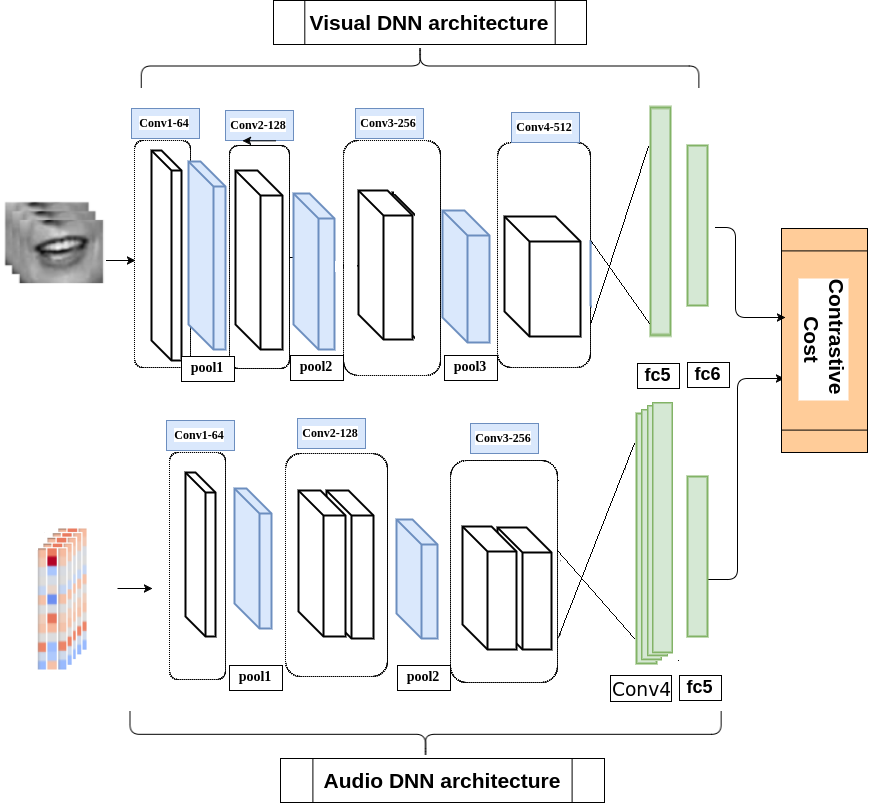
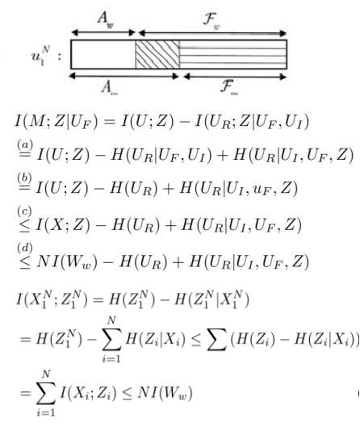

Publications

3D Convolutional Neural Networks for Cross Audio-Visual Matching Recognition
We propose the use of a coupled 3D Convolutional Neural Network (3D-CNN) architecture that can map both modalities into a representation space to evaluate the correspondence of audio-visual streams using the learned multimodal features. The proposed architecture will incorporate both spatial and temporal information jointly to effectively find the correlation between temporal information for different modalities.
Amirsina Torfi, Seyed Mehdi Iranmanesh, Nasser M. Nasrabadi, Jeremy Dawson
IEEE Access 2017
Text-Independent Speaker Verification Using 3D Convolutional Neural Networks
In our paper, we propose an adaptive feature learning by utilizing the 3D-CNNs for direct speaker model creation in which, for both development and enrollment phases, an identical number of spoken utterances per speaker is fed to the network for representing the speaker utterances and creation of the speaker model. This leads to simultaneously capturing the speaker-related information and building a more robust system to cope with within-speaker variation.
Amirsina Torfi, Nasser M. Nasrabadi, Jeremy Dawson
Preprint on ArXiv 2017
show more

Polar Coding for Achieving the Capacity of Marginal Channels in Nonbinary-Input Setting
The first task of this paper is to propose a coding scheme to achieve secrecy capacity in asymmetric nonbinary-input channels while keeping reliability and security conditions satisfied. Our assumption is that the wiretap channel is stochastically degraded with respect to the main channel and message distribution is unspecified. The main idea is to send information set over good channels for Bob and bad channels for Eve and send random symbols for channels that are good for both.
Amirsina Torfi, Sobhan Soleymani, Seyed Mehdi Iranmanesh, Hadi Kazemi, Rouzbeh Asghari Shirvani, Vahid Tabataba Vakili
IEEE Conference on Information Sciences and Systems, 2017. (CISS)
On the Construction of Polar Codes for Achieving the Capacity of Marginal Channels
We prove that there exists a frozen vector for which the coding scheme satisfies reliability and security conditions and approaches the secrecy capacity. We further empirically show that in the proposed scheme for non-symmetric binary-input discrete memoryless channels, the equivocation rate achieves its upper bound in the whole capacity-equivocation region.
Amirsina Torfi, Sobhan Soleymani, Siamak Aram, Vahid Tabataba Vakili
55th Annual Allerton Conference on Communication, Control, and Computing (2017)